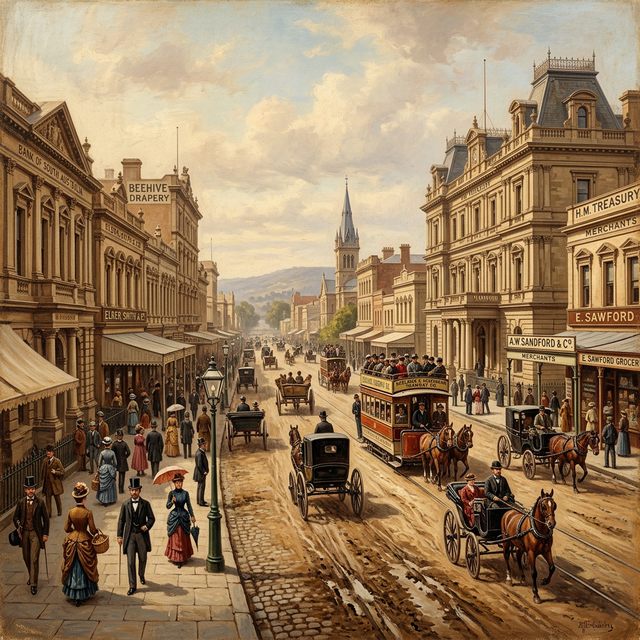
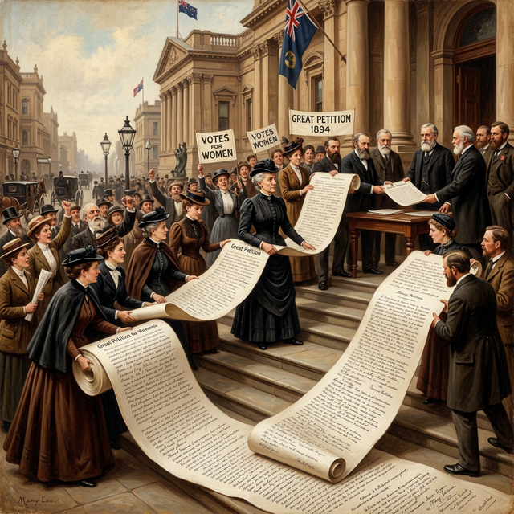

Champion of the Vote
Mary Lee was a brave woman who believed that women should have the same rights as men. She helped South Australia become the first place in the nation where women could vote.
A Long Journey
Mary Lee was born in Ireland in 1821. She lived a quiet life there for many years, raising seven children and even running a school for girls. But in 1879, when she was 58 years old, her life changed forever.
She traveled all the way to Adelaide, South Australia, to care for her sick son. Sadly, her son passed away, and Mary found herself alone in a new country with no money to go back home. She took in boarders (people who paid to live in her house) to survive.
Helping Others
Even though she had very little, Mary wanted to help other women and children. She joined a group called the Social Purity Society. At that time, many girls were treated very unfairly and weren't protected by the law.
Mary worked very hard to change the laws. She learned that if women wanted to be treated fairly, they needed to have the power to help make the laws. And to do that, they needed the right to vote!

The Suffrage League
In 1888, Mary helped start the Women's Suffrage League. This was a group of women who campaigned for the right to vote. Mary was the secretary, and she was the heart of the whole movement.
She traveled everywhere—to factories, church meetings, and even out into the country. She convinced everyone she met that women's voices were just as important as men's. She was a powerful speaker who wouldn't take "no" for an answer!

Fair Pay for All
Mary also cared about women who worked in clothing factories. In those days, many women were worked very hard for very little money. This was called sweating.
In 1890, Mary started a trade union for working women. She visited workshops and fought for fairer prices for the clothes the women made. She believed that everyone deserved to be paid fairly for their hard work.
A 400-Foot Roll of Paper
In 1894, Mary and her team did something incredible. They collected signatures for a giant petition to give women the vote. They gathered 11,600 names from all over South Australia!
When the petition was finished, it was 122 metres (400 feet) long! It was the longest petition ever seen in South Australia. The politicians couldn't ignore it anymore. On December 18, 1894, the law was passed, making South Australian women the first in Australia to win the vote.
Mary's Journey to Justice
Click the dates to see how Mary changed the law for women.
1821
Mary is born in Ireland.
1879
Sails to Australia to help her sick son.
1885
Helps change the law to protect young girls.
1888
Starts the Women's Suffrage League.
1894
The Great Petition helps women win the vote!
1909
Mary Lee dies in Adelaide, aged 88.
Want to Learn More?
Visit our detailed biography page for in-depth information, including comprehensive life history and academic references.
📖 Read Full Biography
Detailed biography with sources and references